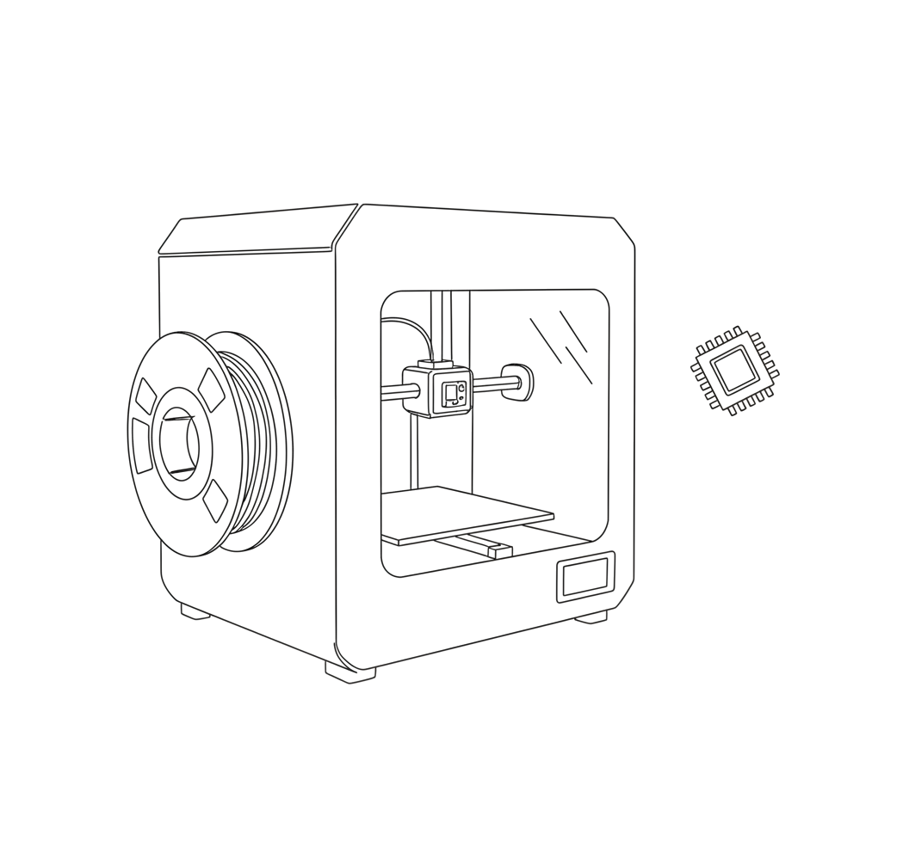
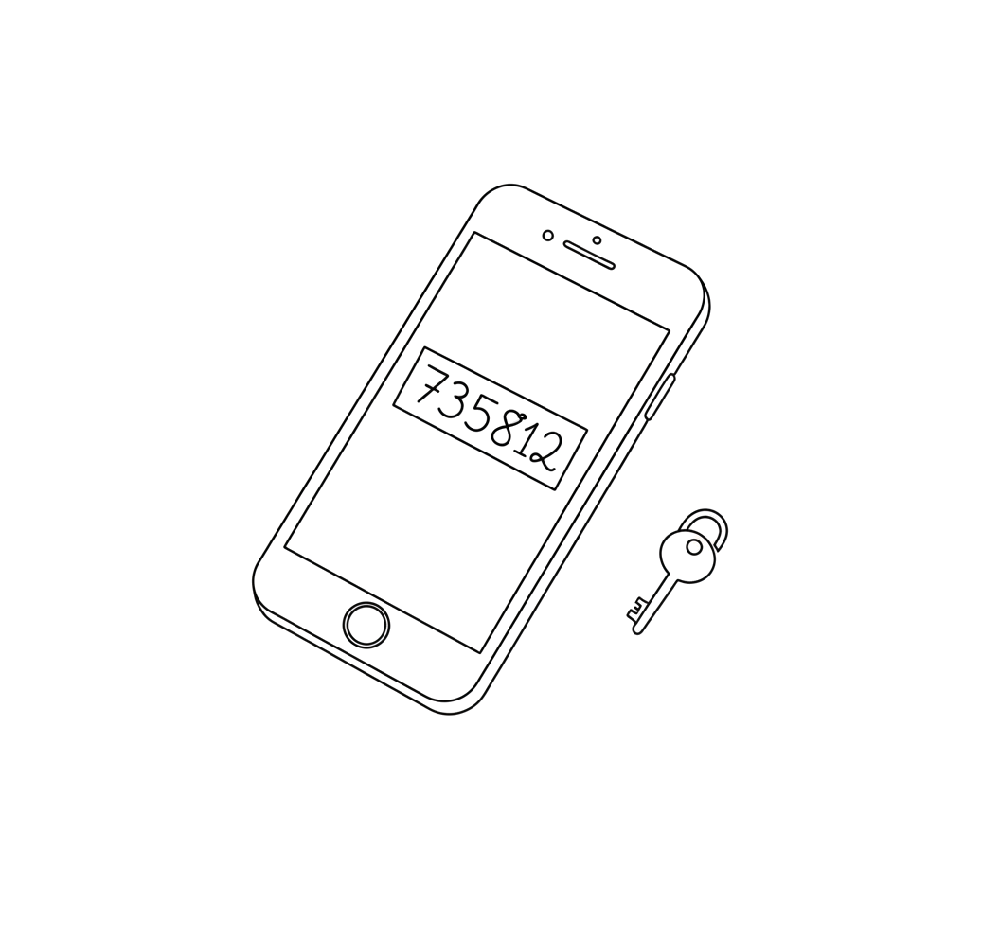
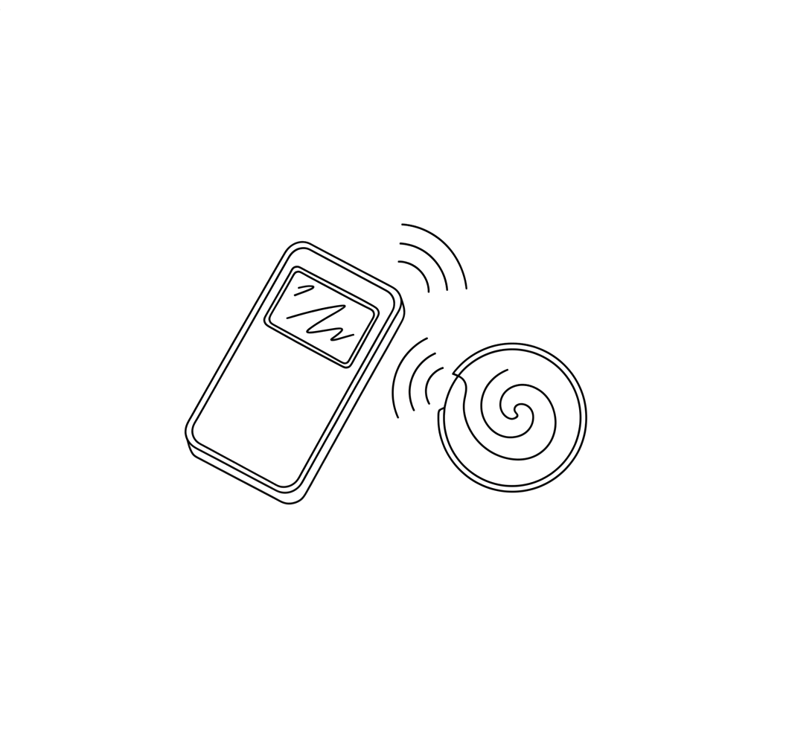

Notes
Write-ups on things I built, broke, and eventually understood.

Auditing UniFi with AI
A copy-paste prompt for pointing an AI agent at a UniFi controller's API and getting a prioritized network audit back.

Custom Firmware for the Snapmaker U1
Extended Klipper firmware features, plus setting up Bambu RFID filament tag reading.

Migrating Away from Authy
Authy has no export button — getting your own TOTP secrets out via iOS + mitmproxy, or a rooted Android device.

Bambu Lab NFC Cloning
Writing a spool's RFID data onto a fresh ISO14443A Gen2 tag with a Proxmark3, so a refilled spool reads as genuine.